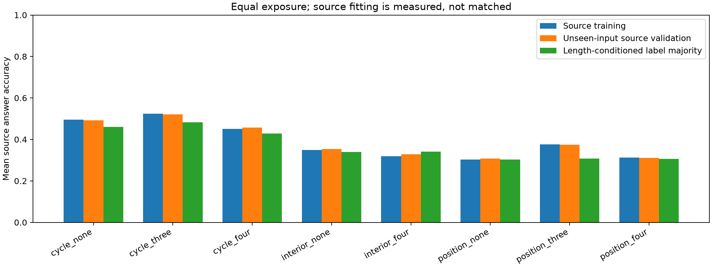
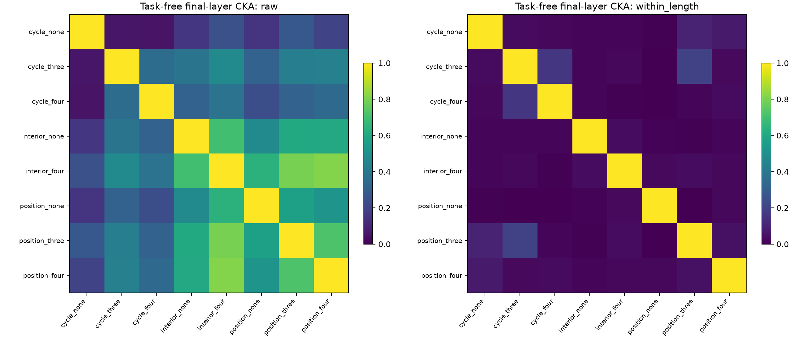
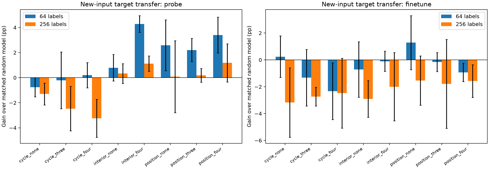

源任务数量均为 4，三个初始化种子共享所有输入和训练采样计划，每任务曝光 38,400 次。使用原仓库的性质函数、Passage 数字词表与因果 Transformer；宽度 96、2 层，训练 1200 步，只预测答案 token。这是新组合的小规模筛查，不是原论文完整规模的复现。
三任务关系包含 fixed+exceed+def=n、fixed+nontrivial=cycles；四任务关系来自消去中间性质，或 peaks+valleys+double_ascents+double_descents=n−2。无约束对照仅指没有已证明的同输入有理线性恒等式，不代表没有其他数学关系。对照只根据训练前的新生成标签统计选择，未查看 CKA 或迁移。
| 组合 | 最小约束任务数 | 任务 | 平均条件熵 | 平均长度内 |相关| |
|---|---|---|---|---|
| cycle_none | 无已证明约束 | exceedances, cycle_count, three_cycle_count, odd_cycle_count | 1.262 | 0.341 |
| cycle_three | 3 | fixed_points, cycle_count, nontrivial_cycle_count, components | 1.209 | 0.338 |
| cycle_four | 4 | fixed_points, even_cycle_count, odd_cycle_count, nontrivial_cycle_count | 1.269 | 0.336 |
| interior_none | 无已证明约束 | peaks, valleys, left_to_right_maxima, right_to_left_maxima | 1.533 | 0.235 |
| interior_four | 4 | peaks, valleys, double_ascents, double_descents | 1.566 | 0.534 |
| position_none | 无已证明约束 | double_ascents, double_descents, successions, adjacencies | 1.604 | 0.315 |
| position_three | 3 | fixed_points, exceedances, deficiencies, right_to_left_minima | 1.575 | 0.330 |
| position_four | 4 | exceedances, deficiencies, cycle_count, nontrivial_cycle_count | 1.606 | 0.326 |


源验证还与仅用训练标签、按排列长度预测多数类的基线比较，避免把标签频率拟合解释为学会了完整数学性质。逐任务基线见 长度多数类，逐组合差值见 源学习汇总。源任务未充分学习时，CKA 和迁移差异不能确认高阶结构被网络利用。
CKA 在相同的 420 个任务无关前缀、ONE_END 位置测量。并列报告原始 CKA 和逐长度减均值后的 CKA，帮助检查长度信息的贡献。不同组合使用配对初始化；相同组合的跨种子结果另存。这里没有重做正确/错误输入变换对照，原实验 24/24 最终层 CKA 增加的结论不受改变。
目标任务为 descents, recoils, lis_length, longest_increasing_run，均未出现在任何源组合中。目标支持输入、目标测试输入、源训练输入、源验证输入、表征输入五组全局互不重复；长度均为 10–30。支持样本预算 64、256，按输入均匀采样，嵌套且所有条件共用；标签类别不强行平衡。随机模型使用配对初始化与相同支持集、更新步数和学习率。

主端点预先固定为 256 标签的全模型微调；下表平均四个目标任务和三个初始化种子。误差条只描述三个初始化均值的样本标准差，不提供独立数据重复或显著性证据。
| 组合 | 准确率 | 随机模型准确率 | 迁移收益 | 种子均值为正 |
|---|---|---|---|---|
| cycle_none | 31.27% | 34.44% | -3.17 pp | 0/3 |
| cycle_three | 31.71% | 34.44% | -2.74 pp | 0/3 |
| cycle_four | 31.97% | 34.44% | -2.47 pp | 1/3 |
| interior_none | 31.53% | 34.44% | -2.91 pp | 0/3 |
| interior_four | 32.45% | 34.44% | -2.00 pp | 0/3 |
| position_none | 32.91% | 34.44% | -1.53 pp | 0/3 |
| position_three | 32.66% | 34.44% | -1.79 pp | 1/3 |
| position_four | 32.87% | 34.44% | -1.57 pp | 0/3 |
含恒等式组合相对同系列无已证明约束对照的差值：
| 组合 | 迁移收益差 |
|---|---|
| cycle_three | +0.44 pp |
| cycle_four | +0.70 pp |
| position_three | -0.25 pp |
| position_four | -0.04 pp |
| interior_four | +0.91 pp |